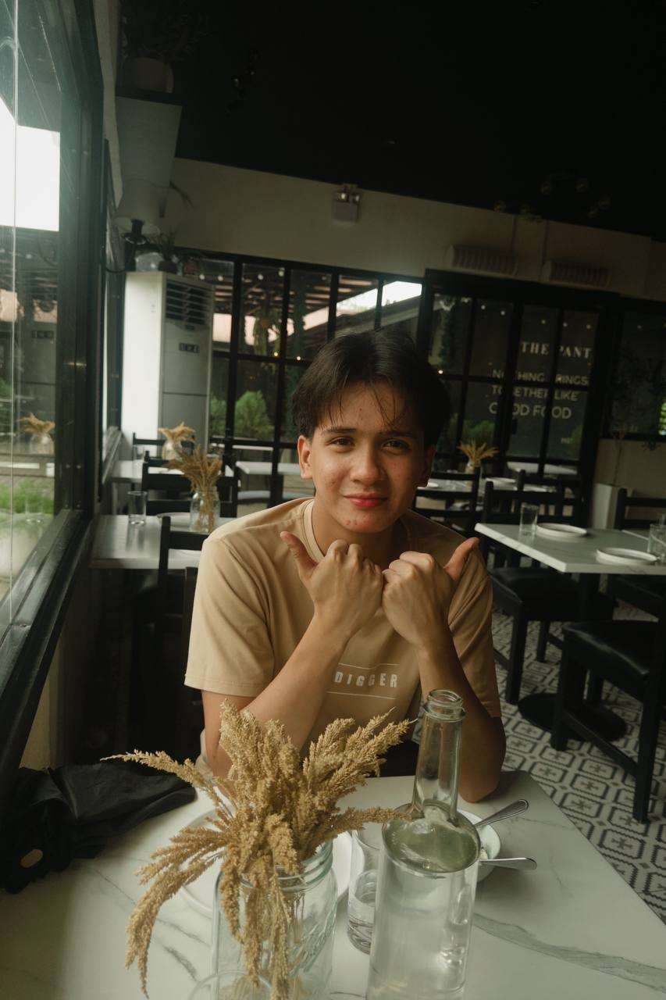

Jhunren Apiag
Lead Researcher
As the team's lead developer, Jhunren focuses on building and testing the core smishing detection feature of the project. He applies his knowledge in mobile development and basic machine learning to design the system's keyword-based detection algorithm. His goal is to make the app both functional and reliable for everyday users.
Python
Java
UI/UX design